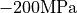
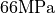
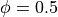
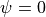
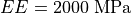
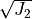
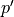
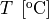
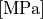
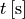

6. Cosserat THM couplings: Thermo-hydro plasticity application - Drucker-Prager yield criterion¶
In this tutorial we will validate the complex behavior of a first order micromorphic Cosserat model when yielding occurs in the presence of THM couplings, for the case of the Drucker-Prager yield criterion. Our model is a !D layer, that consists of one element. The base of the layer is fixed and its top is prescribed to move lateraly along the horizontal dimension (shearing displacement). The boundaries of the layer are considered to be insulated from its surroundings meaning that no flow of heat and pore fluid is allowed to take place (adiabatic undrained boundary conditions). Furthermore, all lateral displacements are constrained to zero. Under this configuration, when yielding takes place in our model the heat that will be produced due to dissipation will lead to an increase in the temperature of the cube and a subsequent increase of pore fluid pressure (thermal pressurization). We will study this phenomenon under a specific choice of material parameters so that we can validate the effect of each coupling in the behavior of the Cosserat layer.
The file for this tutorial can be found in:
ngeoFE_unittests.Multiphysics.Cauchy_tests.ThreeD.BVP.CAUCHY_THM_ThermoHydroplasticity_0
6.1. Begining of file¶
The file begins as follows:
from dolfin import *
from ngeoFE.feproblem import UserFEproblem, General_FEproblem_properties
from ngeoFE.fedefinitions import FEformulation
from ngeoFE.materials import UserMaterial
from ngeoFE_unittests import ngeo_parameters
from ngeoFE_unittests import plotting_params
import os # allows for easier handling of paths
from _operator import itemgetter # allows for transformation of lists to iterables, usefull for the definition of boundary conditions
6.2. Finite element formulation¶
For the implementation of the problem at hand the extra unknowns of the pressure and temperature fields need to be taken into account. We also need to include the values of pressure and temperature inside the material description so that the correct total and effective stresses are taken into account. Moreover, the existence of the coupled momentum, energy and mass balance partial differential equations (see previous tutorial), implies that the variational form of the problem needs to be modified in order to include the transient and coupling terms in the solution of the finite element problem. This procedure has been described in greater detail in the THM couplings implementation tutorial. The new Finite Element formulation is given as follows:
class CosseratTHM1DFEformulation(FEformulation):
'''
Defines a user FE formulation
'''
def __init__(self):
# Number of stress/deformation components
self.p_nstr=4+1+1
# Number of Gauss points
self.ns=1
# Number of auxiliary quantities at gauss points
self.p_aux=3
def auxiliary_fields(self,v):
'''
Set user's generalized deformation vector
'''
auxgde=[
v[3],
v[4],
v[0]
]
return as_vector(auxgde)
def setVarFormAdditionalTerms_Res(self,u,Du,v,svars,metadata,dt):
Res=0.
lstar=svars.sub(103-1)
bstar=svars.sub(104-1)
rhoC=svars.sub(105-1)
#HM terms
eps=self.generalized_epsilon(Du)
eps_v=eps[0]
virtual_pf=v[3]
Res+=-(1./dt)*(1./bstar)*dot(eps_v,virtual_pf)*dx(metadata=metadata)
#TM terms
virtual_Temp=v[4]
for i in range(1,18):
Res+= + (1./dt)*(1./rhoC)*svars.sub(i-1)*svars.sub(76+i-1)*virtual_Temp*dx(metadata=metadata)
#HT terms
DTemp=Du[4]
Res+= +(1./dt)*(lstar/bstar)*dot(DTemp,virtual_pf)*dx(metadata=metadata)
return Res
def setVarFormAdditionalTerms_Jac(self,u,Du,v,svars,metadata,dt,ddsdde):
Jac=0.
lstar=svars.sub(101+2-1)
bstar=svars.sub(102+2-1)
rhoC=svars.sub(103+2-1)
alfa=svars.sub(104+2-1)
#HM terms
eps=self.generalized_epsilon(u) #needs u (trial function, because it takes derivatives in terms of u and not Du for calculating the Jacobian.
eps_vol=eps[0]
virtual_pf=v[3]
Jac+=+(1./dt)*(1./bstar)*dot(eps_vol,virtual_pf)*dx(metadata=metadata)
#MH terms
pf=u[3] #same as before
virtual_eps=self.generalized_epsilon(v)
virtual_eps_vol=virtual_eps[0]
Jac+=-(1./dt)*dt*dot(pf,virtual_eps_vol)*dx(metadata=metadata)
#HT terms
temperature = u[4]
Jac+=-(1./dt)*(lstar/bstar)*dot(temperature,virtual_pf)*dx(metadata=metadata)
#TH terms Alexandros
avector=np.zeros(self.p_nstr)
avector[0]=1.;
eps_temp=alfa*temperature*as_vector(avector)
eps_temp_vol=eps_temp[0]#+eps_temp[1]+eps_temp[2]
#MT terms
Jac+=-(1./dt)*dt*inner(dot(ddsdde,eps_temp),virtual_eps)*dx(metadata=metadata) #changed sign
#TM terms due to thermal expansion and plastic deformation
virtual_temp=v[4]
#change in Jacobian terms
eps_eff=eps+eps_temp
deps_plastic=[]
for i in range(0,self.p_nstr):
deps_plastic.append(svars.sub(77-1+i))
deps_plastic=as_vector(deps_plastic)
Jac+=-(1./dt)*dt*(1./rhoC)*inner(dot(ddsdde,eps_eff),deps_plastic)*virtual_temp*dx(metadata=metadata)
#TM terms due to fluid pressure and plastic deforamtion, i.e. thermal pressurization
deps_plastic_vol=deps_plastic[0]
Jac+=+(1./dt)*dt*(1./rhoC)*pf*deps_plastic_vol*virtual_temp*dx(metadata=metadata)
#TM extra
Jac+=(1./dt)*dt*(1./rhoC)*inner(dot(ddsdde,eps_temp),deps_plastic)*virtual_temp*dx(metadata=metadata)
return Jac
def create_element(self,cell):
"""
Set desired element
"""
self.degree=1
element1=VectorElement("Lagrange",cell,degree=self.degree,dim=2)
element2=FiniteElement("Lagrange",cell,degree=self.degree)
element3=VectorElement("Lagrange",cell,degree=self.degree,dim=2)
element=MixedElement([element1,element2,element3])
return element
def dotv_coeffs(self):
"""
Set left hand side derivative coefficients
"""
# return as_vector([0.,0.,0.,1000.,1000.])
scale_p=1.
scale_t=1.
# scale=1./1000.
return as_vector([0.,0.,0.,1.*scale_p,1.*scale_t])
6.3. Finite element problem description¶
We proceed now with building the main Finite element model, corresponding to Triaxial test of a Cauchy elastoplastic cube with a Drucker-Prager yield criterion.
The finite element model is built inside a child class that inherits its methods from the parentclass UserFEproblem(). We will provide here commentary for each method used inside
the childclass CosseratTHM1DFEproblem(UserFEproblem).
class CosseratTHM1DFEproblem(UserFEproblem):
"""
Defines a user FE problem for given FE formulation
"""
def __init__(self,FEformulation):
self.description="Example of 2D plane strain problem, Cosserat continuum with Drucker Prager material"
scale = 1.
self.w=1.
self.nw=1
self.problem_step=0
self.Pressure_loading = 200./3.*scale
self.Normal_loading_eff = -600./3*scale+self.Pressure_loading
self.Normal_loading_total =self.Normal_loading_eff-self.Pressure_loading
super().__init__(FEformulation)
In the class __init__() method, the finite element formulation defined above is provided as argument.
We set here the length of the layer w`=1 and number of elements for the analysis :param:`self.nw`=1 and we introduce the variables that take into account the pore fulid pressire pressure :param:`Pressure_loading and
the effective normal stress Normal_loading_eff. They are connected to each other through the Terzaghi relation Normal_loading_total
The initialization then proceeds to set up all the methods of the parentclass UserFEproblem().
The methods inside the class are defined by overriding the methods inside the parent class.
def set_general_properties(self):
"""
Set here all the parameters of the problem, except material properties
"""
self.genprops=General_FEproblem_properties()
# Number of state variables
self.genprops.p_nsvars=110
This method is used to provide the number of state variables of the material. In this tutorial the thermo- hydro- mechanical behavior is important and therefore, the state of material is described by the increment of generalized stress, generalized total strain, generalized elastic strain, generalized plastic strain, plastic strain multiplier and generalized plastic strain rate. The generalized variables include the mechanical stresses, Cosserat moment and total strains, curvatures (elastic, plastic decomposition). Moreover, the state of the material takes into account the rate of plastic strains/curvatures and the fluxes and partial derivatives of the pressure and temperature fields. For a 1D problem 6 generalized strain components (and consequently 6 generalized stress components) are needed for the description of equilibrium. The state of the material contains the information also for the rest of the generalized components of the multiphysics 3D problem. For each material used by the Numerical Geolab, the number of state variable components is given in the corresponding material table.
Next we continue by generating the mesh for the problem at hand. Here, we model a 1D Cosserat linear segment.
For this simple geometry the capabilities of the dolfin.cpp.mesh module can be used to define
a linear segment consisting of 1 line element by specifying the left and right b.
def create_mesh(self):
"""
Set mesh and subdomains
"""
mesh=IntervalMesh(self.nw,-self.w/2.,self.w/2.)
cd = MeshFunction("size_t", mesh, mesh.topology().dim())
fd = MeshFunction("size_t", mesh, mesh.topology().dim()-1)
return mesh, cd, fd
For the domain at hand we specify a discretization with nw=1 element along the x[0] component. The dolfin.cpp.mesh.MeshFunction method of dolfin is used to
provide the mesh object, the interior domain and the boundary domains.
We next assign values to the regions of the mesh defined by different material properties.
def create_subdomains(self,mesh):
"""
Create subdomains by marking regions
"""
subdomains = MeshFunction("size_t", mesh, mesh.topology().dim())
subdomains.set_all(0) #assigns material/props number 0 everywhere
return subdomains
In this tutorial all the domain is defined by the same material properties and therefore the value 0 will be assigned everywhere inside the mesh. This value is a number indicating which material parameters need to be taken into account in each mesh region (see the corresponding method `set_material_params()`_).
IMPORTANT NOTE
We need also to initialize the Gauss point monitoring subdomain, when state variable output is needed. We use the same method as in the case of material definition based onthe FEniCs software:
6.3.1. Monitoring stress and state variables at the Gauss points¶
class Gauss_point_Querry(SubDomain):
def __init__(self,w,nw):
self.w=w
self.nw=nw
super().__init__()
def inside(self, x, on_boundary):
rreg=1.*self.w/(1.*np.float(self.nw))
lreg=-1.*self.w/(1.*np.float(self.nw))
print(rreg,lreg)
# return x[0] >= 1./2.-1./80. and between(x[1], (-0.1,0.1))
return between(x[0], (lreg,rreg))
def create_Gauss_point_querry_domain(self,mesh):
"""
Create subdomains by marking regions
"""
GaussDomain = MeshFunction("size_t", mesh, mesh.topology().dim())
GaussDomain.set_all(0) #assigns material/props number 0 everywhere
GaussDomainQuerry= self.Gauss_point_Querry(self.w,self.nw)
GaussDomainQuerry.mark(GaussDomain,1)
return GaussDomain
VectorFunctionSpace() class of the FEniCs software.We note here that the Gauss point definition is done on the cells of the Finite Element mesh and not on the boundary facets. This is done because the Gauss points are on the
interior of the domain and use of the nodal selection algorithm inside the Numerical Geolab module ngeoFE.feproblem (see method ngeoFE.feproblem.UserFEobject.set_history_output_indices())
returns an empty set. The method set_svars_history_output_indices needs to be called -internally- instead.
6.3.2. Boundary identification¶
We proceed now by identifying the boundaries needed for the application of the boundary conditions at a later stage of the modeling procedure.
We make use of the dolfin.cpp.mesh.SubDomain parent class inside dolfin:
- class dolfin.cpp.mesh.SuDomain¶
We create a child class that will handle the assignment of different labels at the different faces of the unit cube. We implement this by
modifying the inside() method of the SubDomain parent class.
- dolfin.cpp.mesh.SuDomain.inside()¶
class Boundary(SubDomain):
def __init__(self,xyz,param):
self.xyz=xyz
self.param=param
super().__init__()
def inside(self, x, on_boundary):
tol = DOLFIN_EPS
return on_boundary and near(x[self.xyz],self.param)
Inside the Boundary subclass we define the logical test for assigning the specific boundary node in one of the boundary regions, where the boundary conditions will be applied.
The value x[i] indicates the spatial coordinate  of the problem at hand. We continue by marking the boundaries of the model based on the classes defined during the boundary identification phase (see section Boundary identification above).
We do so by assigning the numbers 1 to 6 to the different boundary facets of the model. To do this we use the method
of the problem at hand. We continue by marking the boundaries of the model based on the classes defined during the boundary identification phase (see section Boundary identification above).
We do so by assigning the numbers 1 to 6 to the different boundary facets of the model. To do this we use the method mark() from the SubDomain class of
dolfin.
def mark_boundaries(self, boundaries):
"""
Mark left and right boundary points
"""
left0 = self.Boundary(0,-self.w/2.)
left0.mark(boundaries, 1)
right0 = self.Boundary(0,self.w/2.)
right0.mark(boundaries, 2)
return
6.3.2.1. Initial conditions¶
Our test takes place in a fluid saturated geomaterial, which lies under total compression Normal_loading total = .
The pore fluid pressure is set to be self.Pressure_loading = , thus initially the material lies under uniform effective
compressive stress self.Normal_loading_eff =  according to the Terzaghi principle. We need to specify the initial state at the start of the analysis,
by making use of the function
according to the Terzaghi principle. We need to specify the initial state at the start of the analysis,
by making use of the function set_initial_conditions() :
def set_initial_conditions(self):
"""
Initialize state variables vector
"""
#Modify the state variables (corresponding to the stresses)
tmp=np.zeros(self.genprops.p_nsvars)
tmp[1-1]=self.Normal_loading_eff
tmp[5-1]=self.Normal_loading_eff
tmp[9-1]=self.Normal_loading_eff
tmp[101-1]= self.Pressure_loading
self.feobj.svars2.interpolate(Constant(tmp))
#Modify the stresses (for Paraview)
tmp=np.zeros(6)
tmp[1-1]=self.Normal_loading_total
self.feobj.sigma2.interpolate(Constant(tmp))
tmp=np.zeros(5)
tmp[4-1]= self.Pressure_loading
self.feobj.usol.interpolate(Constant(tmp))
pass
6.3.2.2. Assigning boundary conditions¶
We are now able to identify the boundaries of the mesh and assign different boundary condition to each side of the boundary.
The way we apply the boundary conditions can be seen in the method
set_bcs():
def set_bcs(self):
"""
Set boundary conditions for the user problem / could be replaced by external mesher, e.g. Abaqus, Gmsh...
"""
self.scale_u=1
p = self.Normal_loading_eff
tanfi = self.mats[0].props[10]
G = self.mats[0].props[1]
Gc = self.mats[0].props[2]
h1 = self.mats[0].props[15]
h2 = self.mats[0].props[16]
self.u1_tot=p*tanfi/(np.sqrt(2*(h1+h2))*1.2*(G+Gc))
bcs=[]
if self.problem_step == 0:
bcs = [
[1, [0, [0,0], 0.]],
[1, [0, [0,1], 0.]],
[1, [1, [1], 0.]],
[1, [1, [2,0], 0.]],
[1, [1, [2,1], 0.]],
[2, [3, [0,0], self.Normal_loading_total*self.scale_u]],
[2, [0, [0,1], 0.]],
[2, [1, [1], 0.]],
[2, [1, [2,0], 0.]],
[2, [1, [2,1], 0.]],
]
elif self.problem_step == 1:
bcs = [
[1, [0, [0,0], 0.]],
[1, [0, [0,1], 0.]],
[1, [1, [1], 0.]],
[1, [1, [2,0], 0.]],
[1, [1, [2,1], 0.]],
[2, [3, [0,0], self.Normal_loading_total*self.scale_u]],
[2, [0, [0,1], self.u1_tot/self.scale_u]],
[2, [1, [1], 0.]],
[2, [1, [2,0], 0.]],
[2, [1, [2,1], 0.]],
]
elif self.problem_step > 1:
bcs = [
[1, [0, [0,0], 0.]],
[1, [0, [0,1], 0.]],
[1, [1, [1], 0.]],
[1, [1, [2,0], 0.]],
[1, [1, [2,1], 0.]],
[2, [3, [0,0], self.Normal_loading_total*self.scale_u]],
[2, [0, [0,1], self.u1_tot/self.scale_u]],
[2, [1, [1], 0.]],
[2, [1, [2,0], 0.]],
[2, [1, [2,1], 0.]],
]
return bcs
Inside this method the boundaries are assigned with the use of a nested list. Dirichlet, Neuman and Robin boundary conditions can be applied both incrementaly and instantaneously. The boundary conditions can be assigned to a boundary region or pointwise.
In this example, the region id ranges from 1 to 2 indicating the left and right regions of the boundary respectively.
On the left of the model the displacement components of the vectorspace ([0,0],[0,1]), the type of bc is set to 0, with zero value indicating Dirichlet boundary conditions.
On the right of the model for the normal displacement component of the vectorspace ([0,0]), the type of bc is set to 3, indicating Neumann boundary conditions with value equal to the total normal stress self.Normal_loading_total,
specifying a instantaneous Neuman boundary condition that equilibrates the applied pre-stress inside the material.
For the rotation components of the vectorspace ([1]), the type of bc is set to 1, with value 0, indicating that during the shearing of the layer, no Cosserat moment is applied on both bounds of the linear domain.
For the pore fluid pressure and temperature components of the vectorspace ([2,0], [2,1]) we set the type of boundary condition to 1, with value 0, indicating that during the triaxial analysis, we apply undrained, adiabatic Neumann conditions.
In the next steps, we implement an adiabatic undrained shear test. We set the horizontal displacement component [0,1] of the right boundary (region_id=2) to a final value self.u1_tot,
under constant Neumann total stress.
6.3.3. History output specification¶
Numerical Geolab offers the user the capability of extracting the output at the converged increments of the numerical analysis at specific Gauss points and nodes of the numerical model. This capability is given to the user in order to obtain the exact nodal output of the solution (forces, displacements) and the corresponding state variables output at the Gauss points, instead of using the interpolated results provided in a separate .vtk file for postprocessing with a third party software (e.g. Paraview).
6.3.3.1. Assigning the nodal history output¶
The history output at the nodes can be given by:
def history_output(self):
"""
Used to get output of residual at selected node
"""
hist=[[2,[1,[0,0]]],
[2,[0,[0,0]]],
[2,[1,[0,1]]],
[2,[0,[0,1]]],
[2,[0,[1]]],
[2,[1,[1]]],
[2,[1,[2,0]]],
[2,[0,[2,0]]],
[2,[1,[2,1]]],
[2,[0,[2,1]]],
]
return hist
The node specification works the same way as in set_bcs(). In this example we choose the right part of the boundary (2) in order to monitor the all the vector components ([0,0],[0,1],[1],[2,0],[2,1]) of the force (1) and displacements (0) fields.
6.3.3.2. Assigning the state variable history output at the Gauss points¶
We assign next the components of the state variables that need to be monitored at the specific Gauss points:
def history_svars_output(self):
"""
Used to get output of svars at selected Gauss point
"""
hist_svars=[[1,[1,[0]]], #tau_11
[1,[1,[1]]], #tau_12
[1,[1,[2]]], #tau_13
[1,[1,[3]]], #tau_21
[1,[1,[4]]], #tau_22
[1,[1,[5]]], #tau_23
[1,[1,[6]]], #tau_31
[1,[1,[7]]], #tau_32
[1,[1,[8]]], #tau_33
[1,[1,[9]]], #mu_11
[1,[1,[10]]], #mu_12
[1,[1,[11]]], #mu_13
[1,[1,[12]]], #mu_21
[1,[1,[13]]], #mu_22
[1,[1,[14]]], #mu_23
[1,[1,[15]]], #mu_31
[1,[1,[16]]], #mu_32
[1,[1,[17]]], #mu_33
[1,[1,[18]]], #qhy_11
[1,[1,[19]]], #qhy_22
[1,[1,[20]]], #qhy_33
[1,[1,[21]]], #qth_11
[1,[1,[22]]], #qth_22
[1,[1,[23]]], #qth_33
[1,[1,[24]]], #gamma_11
[1,[1,[25]]], #gamma_12
[1,[1,[26]]], #gamma_13
[1,[1,[27]]], #gamma_21
[1,[1,[28]]], #gamma_22
[1,[1,[29]]], #gamma_23
[1,[1,[30]]], #gamma_31
[1,[1,[31]]], #gamma_32
[1,[1,[32]]], #gamma_33
[1,[1,[33]]], #kappa_11
[1,[1,[34]]], #kappa_12
[1,[1,[35]]], #kappa_13
[1,[1,[36]]], #kappa_21
[1,[1,[37]]], #kappa_22
[1,[1,[38]]], #kappa_23
[1,[1,[39]]], #kappa_31
[1,[1,[40]]], #kappa_32
[1,[1,[41]]], #kappa_33
[1,[1,[42]]], #P,_11
[1,[1,[43]]], #P,_22
[1,[1,[44]]], #P,_33
[1,[1,[45]]], #T,_11
[1,[1,[46]]], #T,_22
[1,[1,[47]]], #T,_33
[1,[1,[76]]], #d_γ11_p
[1,[1,[77]]], #d_γ12_p
[1,[1,[78]]], #d_γ13_p
[1,[1,[79]]], #d_γ21_p
[1,[1,[80]]], #d_γ22_p
[1,[1,[81]]], #d_γ23_p
[1,[1,[82]]], #d_γ31_p
[1,[1,[83]]], #d_γ32_p
[1,[1,[84]]], #d_γ33_p
[1,[1,[85]]], #d_k11_p
[1,[1,[86]]], #d_k12_p
[1,[1,[87]]], #d_k13_p
[1,[1,[88]]], #d_k21_p
[1,[1,[89]]], #d_k22_p
[1,[1,[90]]], #d_k23_p
[1,[1,[91]]], #d_k31_p
[1,[1,[92]]], #d_k32_p
[1,[1,[93]]], #d_k33_p
[1,[1,[49]]], #γ11_p
[1,[1,[53]]], #γ22_p
[1,[1,[57]]], #γ33_p
[1,[1,[75]]], #lambda_dot
[1,[1,[108]]], #DP
[1,[1,[109]]], #DT
]
return hist_svars
The Gauss point specification works the same way as in set_bcs() and history_output(). In this example in the region (1) defined by the
method create_Gauss_point_querry_domain
, we choose to monitor the above vector components, which translate to the stresses, increments of plastic strain pressure, temperature and normal total strains respectively.
The mapping between the vector components of the Function space and the state variable components is given in the corresponding material table.
6.3.4. Material specification¶
Next, we define the analysis material that we have already assigned in the create_subdomains() method.
def set_materials(self):
"""
Create material objects and set material parameters
"""
mats=[]
# load material #1
env_lib=ngeo_parameters.env_lib
umat_lib_path= ngeo_parameters.umat_lib_path
umat_lib = umat_lib_path+'/COSSERAT3D-THM/libplast_Cosserat3D-THM.so'
umat_id=1 # if many materials exist in the same library
mat=UserMaterial(env_lib,umat_lib,umat_id)
mat.props=self.set_material_1_properties()
#
mats.append(mat)
return mats
The ngeo_parameters.py module contains the relative path to the materials libraries, which specify the different materials available to the user.
The variable umat_id=1 needs to be set for the 1D analyses performed here. It specifies the mapping of the updated vector components of the
strain increment
and the corresponding tensor components of the constitutive matrix, with their position in the 3D generalized Voigt strain vector
and 3D constitutive matrix provided at the material subroutine (material algorithm). This mapping returns back
the correct components of the stress vector and constitutive matrix to pass into the residual calculation of the
weak form in dolfin (equilibrium iterations). The material properties passed into the material algorithm, are set
with the helper method
set_material_params() :
def set_material_1_properties(self):
"""
Sets material parameters
"""
g1=8./5.;g2=2./5.;g3=8./5.;g4=2./5.
h1=2./3. ;h2=-1./6.;h3=2./3.;h4=-1./6.;
K=666.66; G=1.*10.**3.; Gc=0.5*10.**3. ; L=1*10**(2.);R=10.*10.**(-3.);
MG=G*(R**2.)/h3 ; MGc=MG; #th_g=0.;
permeability1 = 1.*10.**8.;fluid_viscocity = 1.;bstar=1.*10.**8.;
permeability = permeability1/bstar
conductivity = 1; rhoC = 1; alpha =0.; lstar = 1.*10.**8.;
tanfi=0.5; cc=0.0;
tanpsi=0.; Hsfi=0.; Hscc=0.;
eta1=0.0
eta1=0.
prop_num=29
props=np.zeros(prop_num)
props[0]=K
props[1]=G
props[2]=Gc
props[3]=L
props[4]=MG
props[5]=MGc
props[6]=R
props[7]=permeability
props[8]=fluid_viscocity
props[9]=bstar
props[10]=conductivity
props[11]=rhoC
props[12]=alpha
props[13]=lstar
props[14]=0.
props[15]=tanfi
props[16]=cc
props[17]=tanpsi
props[18]=Hsfi
props[19]=Hscc
props[20]=h1
props[21]=h2
props[22]=h3
props[23]=h4
props[24]=g1
props[25]=g2
props[26]=g3
props[27]=g4
props[28]=eta1
return props
The material used in this application is an elastic perfectly plastic that follows the Drucker-Prager yield criterion 
with non-associative flow rule . We specify the material’s elastic parameters using the material young modulus  and
Poisson ratio  . The parameters passed into the material subroutine are the 3D isotropic compression modulus
. The parameters passed into the material subroutine are the 3D isotropic compression modulus KK and the shear modulus
GG. Therefore, a transformation of the elastic constants is needed. The material constants ( GG, KK, chi, eta_f, lstar, bstar, alpha,
kT, rhoC ), and their position in the material properties (numpy array props), can be found in the
Material description and the material library files that accompany Numerical Geolab.
We intent to verify that our analysis indeed predicts the correct relations between the yielding limit and the effective material pressure.
To do so we will set the cohesion of the material to  , so that the material yield strength depends only on the confinement
excerted by the compressive material pressure. We will set the specific heat to account for the temperature increase due to yielding.
We will set the thermal pressurization constant in order to account for the coupling between the
pore fluid pressure and temperature equations. We set the themal expansion coefficient to deactivate the thermomechanical coupling.
This means that any change in the vertical displacement of our sample will come as a result of the swelling of the sample due to the reduction in measure of the compressive effective stress of the sample.
, so that the material yield strength depends only on the confinement
excerted by the compressive material pressure. We will set the specific heat to account for the temperature increase due to yielding.
We will set the thermal pressurization constant in order to account for the coupling between the
pore fluid pressure and temperature equations. We set the themal expansion coefficient to deactivate the thermomechanical coupling.
This means that any change in the vertical displacement of our sample will come as a result of the swelling of the sample due to the reduction in measure of the compressive effective stress of the sample.
6.4. Analysis excecution and postprocessing¶
Our model is now set and ready to run. In this application we will test the effect of the THM couplings in the post yielding
behavior of the material. We will create a model derived by the class Finite element problem.
We will study the problem of a confined unit layer comprised of one linear element. This problem indicates that the diffusion terms of temperature and pressure are negligible
. The full problem description script can be found here.
The results are presented in Figure 1, Figure 2,:ref:Figure 3<my_table3>, Figure 4
6.4.1. Controling the analysis time¶
The following code block provides the solver parameters including the step total analysis time, the maximum time increment, the tolerance of the converged increment and the maximum number of increments.
The parameter scale_t controls the overall time increment and total time of the analysis. We specify it as an attribute of the
class so that it can be called by the other analysis procedure method. To avoid confusion with the problem description we choose not to incorporate it as an
argument to be passed at the level of the problem definition. Next, the main part of the analysis follows.
This method specifies the boundary conditions to be applied at each step of the analysis and the total time of each analysis step.
def run_analysis_procedure(self,reference_data_path):
saveto=reference_data_path+"/THERMO-HYDRO-PLASTIC/Cosserat_1D_Drucker-Prager_THM_test_step_0"+"_App_1_"+str(self.nw)+".xdmf"
self.problem_step = 0
self.bcs=self.set_bcs()
self.feobj.symbolic_bcs = sorted(self.bcs, key=itemgetter(1))
print("initial")
converged=self.solve(saveto,summary=True)
scale_t_program = [self.scale_t,self.scale_t,self.scale_t,self.scale_t,self.scale_t,self.scale_t]
ninc=[100,100,100,100,100,100]
print("shearing1")
nsteps=2
for i in range(nsteps):
self.problem_step = i+1
scale_t = scale_t_program[i]
self.slv.nincmax=ninc[i]#1000000
self.slv.dtmax=0.1*scale_t
self.slv.dt=self.slv.dtmax
self.slv.tmax=self.slv.tmax+1.*scale_t
self.feobj.symbolic_bcs = sorted(self.set_bcs(), key = itemgetter(1))
self.feobj.initBCs()
saveto= reference_data_path+"/THERMO-HYDRO-PLASTIC/Cosserat_1D_Drucker-Prager_THM_test_step_"+str(i+1)+"_App_1_"+str(self.nw)+".xdmf"
converged=self.solve(saveto,summary=True)
return converged
In this application two analysis steps are run. The first step of the analysis is the initial step, where we apply the initial compressive state in one increment under constant total normal stress. We apply then one increment of shear deformation, under constant total normal stress, to provoke yielding of the material and pore fluid pressure increase, due to thermal pressurization.
6.4.2. Postprocessing the results¶
The following functions will help with unpacking the nodal solution and the state variables output at the Gauss points.
def history_unpack(self,list1):
for i,elem in enumerate(list1):
# print(elem)
if i==0:
self.array_time=np.array([[elem[0]]])
self.array_gen_force=elem[1].reshape((1,len(elem[1])))
self.array_gen_disp=elem[2].reshape((1,len(elem[2])))
continue
self.array_time=np.concatenate((self.array_time.copy(),np.array([[elem[0]]])))
self.array_gen_force=np.concatenate((self.array_gen_force.copy(),elem[1].reshape((1,len(elem[1])))))
self.array_gen_disp=np.concatenate((self.array_gen_disp.copy(),elem[2].reshape((1,len(elem[2])))))
def svars_history_unpack(self,list1):
for i,elem in enumerate(list1):
if i==0:
# print(elem)
self.array_dtime=np.array([[elem[0]]])
self.array_gp_svars_comp=elem[1].reshape((1,len(elem[1])))
continue
self.array_dtime=np.concatenate((self.array_dtime.copy(),np.array([[elem[0]]])))
self.array_gp_svars_comp=np.concatenate((self.array_gp_svars_comp.copy(),elem[1].reshape((1,len(elem[1])))))
The following functions allow us to extract the generalized force displacement vectors and the state variables at the Gauss points into postprocessing atributes to be used by the user’s postprocessing algorithms.
def extract_generalized_force_disp(self):
analysis_history=self.feobj.problem_history
self.history_unpack(analysis_history)
self.array_time=self.array_time[:].copy()
self.array_gen_force=self.array_gen_force[:,:]#.reshape((-1,20))
self.array_gen_disp=self.array_gen_disp[:,:]#.reshape((-1,20)).copy()
return
def extract_svars_gauss_point(self):
analysis_svars_history=self.feobj.problem_svars_history
self.svars_history_unpack(analysis_svars_history)
self.array_dtime=self.array_dtime[:].copy()
self.array_gp_svars_comp=self.array_gp_svars_comp[:,:].copy()
6.4.3. Excecuting the analysis¶
The following set of commands initializes the finite element formulation, the finite element problem and runs the analysis.
my_FEformulation=CosseratTHM1DFEformulation()
my_FEproblem1=CosseratTHM1DFEproblem(my_FEformulation)
my_FEproblem1.give_me_solver_params(scale_t=1.)
converged1=my_FEproblem1.run_analysis_procedure(reference_data_path
6.4.4. Plotting the analysis values¶
We will take advantage of the plotting capabilities of Numerical Geolab available in ngeoFE_unittests.plotting_params.
We will plot the deviatoric stress  [MPa] and the effective material pressure  [MPa] in order to check the effect of the swelling in confinement w.r.t. time in Figure Figure 1.
We can plot the vertical displacement [mm], w.r.t. time in Figure in Figure 1, showing the swelling of the specimen.
Fig. 6.4.1 The second invariant w.r.t. effective pore fluid pressure . Due to the specimen’s confinement, it’s compression, leads to higher values of compressive material stresses, and thus the specimen presents a softening response.¶ |
Fig. 6.4.2 Vrtiscal displacement [mm] with respect to time, the model swells.¶ |
{kind=link}
{kind=link}
We next plot the values of Temperature and pore fluid pressure  [MPa]
w.r.t. to time, in the left part of Figure 2. In the right part of Figure Figure 2
we plot the values of pressure
[MPa]
w.r.t. to time, in the left part of Figure 2. In the right part of Figure Figure 2
we plot the values of pressure  and temperature
and temperature  increment w.r.t. time.
increment w.r.t. time.
x1=list(values_time1[:].copy())
y1=list(values_gen_disp1[:,-1].copy())
x1.insert(0,0)
y1.insert(0,0)
x2=list(values_time1[:].copy())
y2=list(values_gen_disp1[:,-6].copy())
x2.insert(0,0)
y2.insert(0,self.my_FEproblem1.Pressure_loading)
fig, ax1, ax2, color1, color2 = plotting_params.object_plot_axes('$t$ [s]', y1_txt='$T\; $[$^o$ C]',color1='',y2_txt='$P$ [MPa]',color2='', title='',mode='2')
plotting_params.object_plot(x1, y1, y2, ax1, ax2, mode='2',color1=color1,color2=color2,label_string='')
plotting_params.show_plot()
plotting_params.plot_legends(ngeo_parameters.reference_data_path, fig, filename='Cauchy_3D_Triaxial_Thermo_Hydro_plasticity_T_P',mode='1')
Fig. 6.4.3 Temperature and Pressure diagrams (, , time ) The temperature and pressure show the same increase.¶ |
Fig. 6.4.4 Due to the choice of the material parameters we establish the the increase of temperature a and pore fluid pressure are equal at each analysis increment.¶ |
{kind=link}
{kind=link}